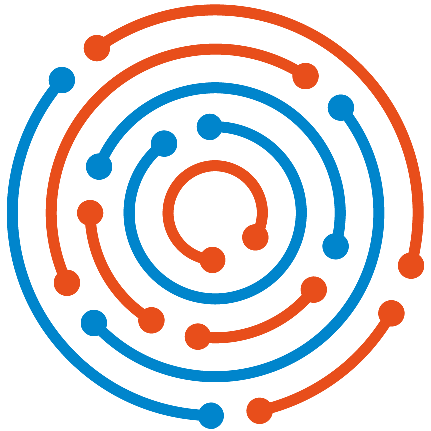
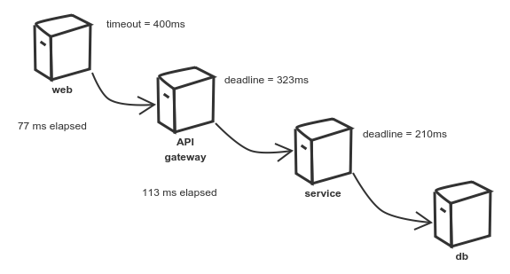

+-----------------------------------------------+
| |
| +-----------------------------------+ |
| | | |
| | Boundary: SOAP | |
| | | |
| +-----------------------------------+ |
| | | |
| | EJB | |
| | | |
| +-----------------------------------+ |
| |
| |
| +--------+ +-------+ +----------+ |
| | | | | | | |
| | JAX-WS | | JPA | | DROOLS | |
| | | | | | | |
| +--------+ +-------+ +----------+ |
| |
| |
| JBoss 4.2.x |
| |
+-----------------------------------------------+Microservice everyting
Mikroserwisy? kto? co?
Mikroserwisom? komu? czemu?
Mikroserwisów? kogo? czego?
Tech wizard @ muumap.pl | |
 | Trainer, consultant @ symentis.pl |
Historia stworzenia wszechświata
według IT
dnia pierwszego, siedział architekt
w swojej wieży z kości słoniowej
w smutku i niepewności
i architekt rzekł
niech nastaną mikroserwisy
niech nastaną małe usługi
zmieniające się z jednego tylko powodu
niech usługi komunikują się
po otwartych interfejsach
i niech wyjście jednego będzie wejściem dla kolejnego
uczyniwszy to architekt dał temu nazwę
nazwał to systemem rozproszonym
i programiści widzieli to
i było to dobre
i tak upłynął wieczór i poranek
Mikroserwisy
Mikroserwisy to koncept architektoniczny który w założeniu ma na celu rozprzęgnięcie rozwiązania poprzez jego dekompozycje funkcjonalną na mniejsze elementy, komunikujące się między sobą poprzez lekkie mechanizmy, często HTTP
— Sam Newman
Mikroserwisy
Niewielki problem biznesowy
Niezależny; niezależnie wdrażany
Działający we własnym procesie
Zarządzający swoimi danymi
Integrujący się z wykorzytaniem powszechnych interfejsów
Monolit to zło - mmkey?
Mikroserwisy są fajne
Czysty kod
Tworzymy moduły które mają pojedynczą odpowiedzialność potencjalnie
Są szybsze niż monolity szybsze do wdrożenia, szysze w działaniu
Łatwiejsze w zarządzaniu nie wszyscy pracują na pojedynczym code-basie
Łatwiejsze do skalowania tutaj gdzieś powinien pojawić się Docker
Docker, docker, docker, docker
Mikroserwisy są fajne - mmmkey?
Bo cóż może się nie udać?
Droga ku mikroserwisom
(…) proces budowy krok po kroku, umożliwiający ciągłą ewaluację istniejącego systemu oraz elastyczne podejmowanie decyzji jaki powinien być kolejny krok.
Piecemeal Growth
— Christopher Alexander
— Christopher Alexander
Exibit A
a scoring engine -- 2009
Cel biznesowy?
Webservices są trudne do sprzedaży.
Może jakoś to wizualizować!
+-----------------------------------------------+
| |
| +--------------------+--------------+ |
| | | | |
| | Boundary: SOAP | JSF | |
| | | | |
| +--------------------+--------------+ |
| | | |
| | EJB | |
| | | |
| +-----------------------------------+ |
| |
| |
| +--------+ +-------+ +----------+ |
| | | | | | | |
| | JAX-WS | | JPA | | DROOLS | |
| | | | | | | |
| +--------+ +-------+ +----------+ |
| |
| |
| JBoss 4.2.x |
| |
+-----------------------------------------------+ +-----------------------------------------------+
| |
| +-----------------+-----------------+ | +---------------+
| | | | | | |
| | Boundary: SOAP | REST endpoint | <--------------+ | Dedicated |
| | | | | | mobile |
| +-----------------+-----------------+ | | Single Page |
| | | | | Application |
| | EJB | | | |
| | | | | |
| +-----------------------------------+ | +---------------+
| |
| |
| +--------+ +-------+ +----------+ |
| | | | | | | |
| | JAX+WS | | JPA | | DROOLS | |
| | | | | | | |
| +--------+ +-------+ +----------+ |
| |
| |
| JBoss 4.2.x |
| |
+-----------------------------------------------+Zapamiętać
Rodzielne rzeczy trzymaj oddzielnie
Microservices checklist
Niewielki problem biznesowy
Niezależny; niezależnie wdrażany
Działający we własnym procesie
Zarządzający swoimi danymi
Integrujący się z wykorzytaniem powszechnych interfejsów
Retrospekcja
We define libraries as components that are linked into a program and called using in-memory calls, while services are out-of-process components who communicate with remote procedure calls
— James Lewis
Consumer Driven Contracts
(…) drives the development of the Provider from its Consumers point of view, which means consumer describes what and how it wants to receive the information (in a form of a contract) and then provider implements the service following the given contract.
Exibit B
sizeable 2007 image repository -- 2012
+--------------------------------------+
| |
| web / controllers |
| |
+-----------+--------------------------+
|
| (1)
|
v
+-------------------------------------+
| |
| application logic |
| |
+--+-------------------------+--------+
| |
| (2) ^ | (4)
| | |
v | (3) v
|
+----------+--+ +------------------+
| | | |
| MySQL | | filesystem |
| | | |
+-------------+ +------------------+Cel biznesowy
Szukajka jest taaaaaaka wolna
że nie da się pracować
Zapamiętać
Nie ma czegoś takiego jak legacy
Gdy nikt nie używa - wyrzuć
Jak nie - polub!
Proxy
+-----+ +------------------+
| | /* | |
+----------------+--------------------------> | |
| | | | The Old stuff |
| | | | +--------+
| | | | | |
| | | +------------------+ |
| | | |
| | | | Elastic Search
| | | | data push
| | | |
| | | |
| | | +------------------+ |
| | | /search | | |
| | +--------------------------> | | <------+
| | | Elastic Search |
| | | index |
| | | |
+-----+ +------------------+Zapamiętać
Z odpowiednim podejściem
wszystko jest
usługą
nie zawsze mikro
Microservices checklist
Niewielki problem biznesowy
Niezależny; niezależnie wdrażany
Działający we własnym procesie
Zarządzający swoimi danymi
Integrujący się z wykorzytaniem powszechnych interfejsów
Retrospekcja
(…) as every parent of a small child knows, converting a large object into small fragments is considerably easier than the reverse process.
Andrew Tanenbaum
— Consistency protocols (2007)
— Consistency protocols (2007)
Te same koncepcją mają różne znaczenie w rożnych obszarach
modele kanoniczne, DDD itpNie ma możliwości przeprowadzenia spójnej aktualizacji w systemie rozproszonym, po kilku bazach danych
Jak zarządzać potencjalnym brakiem spójności danych
Write through
update query +--------------------------+ +----------------------------------+
-------------------->| update denormalized view |-------->| update persistent (master) store |
+--------------------------+ +----------------------------------+
Write behind
update query +----------------------------------+ +---------------------------+
---------------->| update persistent (master) store |----------->| update denormalized views |
+----------------------------------+ +---------------------------+
Read through
read query +--------------------------+ +---------------------------+
<---------------------| update denormalized view |<--------------| read persistent store |
+--------------------------+ +---------------------------+Exibit C
reactive education platform -- 2014
Cel biznesowy?
Uczniowie używają platformy do prac domowych
Tzn. że po 18 ruch jest 10 razy większy!
+--------------------------------------------+
| | Frontend
| | application
+--------------------------------------------+
+--------------+ +---------------+
| | | | Application
| | | | logic
+--------------+ +---------------+
+--------------------------------------------+
| | Event
| | Bus
+--------------------------------------------+
+------+ +------+ +------+ +------+
| | | | | | | | Platform
| | | | | | | | components
+------+ +------+ +------+ +------+ +--------------------------------------------+
| | Static HTML + JS
| | Easily scalable
+--------------------------------------------+
+--------------+ +---------------+
| | | | HTTP
| | | | Resource oriented communication
+--------------+ +---------------+
+--------------------------------------------+
| | RPC Communication
| |
+--------------------------------------------+
+------+ +------+ +------+ +------+
| | | | | | | | Vert.X Verticles
| | | | | | | |
+------+ +------+ +------+ +------+A jeżeliby użyć Vert.X?
usługi, serwisy to moduły minimalizacja zależności pomiędzy zespołami
niezależność frontend’u (JS) i backend’u HTTP endpoints
wdrażanie monolitycznie brak komunikacji pomiędzy węzłami
komunikacja poprzez zdarzenia z wykorzystaniem event bus
Zapamiętać
Decouple people from software
Manage what’s hard to manage
Microservices checklist
Niewielki problem biznesowy
Niezależny; niezależnie wdrażany
Działający we własnym procesie
Zarządzający swoimi danymi
Integrujący się z wykorzytaniem powszechnych interfejsów
Retrospekcja
Golang is a language I don’t particularly enjoy coding, but deployment is painless: single static linked executable. No external dependencies on runtime.
— Joe Wales
Po co nam DevOpsy?
time gap - wdrażaj rzadko (co pół roku)
rzeczy trudne lepiej robić rzadkopersonal gap - różni ludzie robią różne rzeczy
tools gap - diametralnie inne stosy technologiczne pomiędzy dev i ops (Nginx, SQLite, and OS X / Apache, MySQL, and Linux)
Co zapamiętać
z tych wszystkich projeków
monility to systemy
"troszkę mniej rozproszone"
przestaną działać
kiedyś
nawet pojedynczego WAR’a
automatycznie
można wdrożyć
diagramy to tylko mapa
niech aplikacja sama mówi
gdzie spędza czas
loguj centralnie
kto nie zabił serwera grep em
niech pierwszy rzuci kamieniem
monolityczne aplikacje
komunikują się przez API
z zewnętrznym API też należy je testować
dane które płyną przez system
to zdarzenia
dane nie siedzą spokojnie w bazie danych
A jeżeli już się zdecydujemy
to co robią nasze aplikacje kiedy nikt nie patrzy?
Distributed computing

Fallacies of distributed computing
(is) a set of assertions made by L Peter Deutsch and others at Sun Microsystems describing false assumptions that programmers new to distributed applications invariably make
— 1994 - 1998
Sieć jest stabilna.
Latency wynosi zero.
Przepustowość jest nieskończona.
Sieć jest bezpieczna.
Topologia sieci nie ulega zmianie.
Jest jeden administrator.
Koszt przesyłania danych jest pomijalny.
Sieć jest homogeniczna.
Brewer’s theorem
(…) it is impossible for a distributed computer system to simultaneously provide all three of the following guarantees: Consistency, Availability and Partition tolerance.
— 1998
- Consistency
Spójność. Każdy odczyt to najświeższe, ostatnio zapisane dane - lub błąd
- Availability
Dostępność. Każdy odczyt zakończony jest sukcesem, jednak nie ma gwarancji że dane które otrzymaliśmy są najświeższe.
- Partition tolerance
Odporność na podział. System kontynuuje działanie pomimo awarii siedzi i braku komunikacji pomiędzy węzłami.
CAP + Network Fallacies
Client-side load balancing

Server-side load balancing

CAP + Network Fallacies
- Client-Side Service Discovery
Each service register itself in a central registry where all services look up the information
- Server-Side Service Discovery
Store the information on the load-balancer and clients always call same address which encapsulate the dynamic changes of implementations
Consistency vs Availability
- CP
All information are stored in a consistent fashion (placed in a single atomic store)
- AP
Information are distributed in a peer-to-peer manner (eventual consistency)
Mikroserwisy są proste…
…ale nie są łatwe
Pytania?
Dziękuję!
Java flavoured Microservices trainings